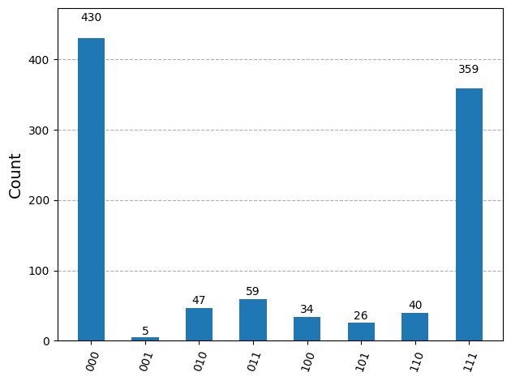

Configuration and Usage#
This notebook describes the basic concepts and configuration of Pulla.
from pprint import pprint
from IPython.core.display import HTML
from qiskit import QuantumCircuit, visualization
from qiskit.compiler import transpile
from iqm.iqm_client.util import print_env_vars
from iqm.qiskit_iqm import IQMProvider
from iqm.pulla.pulla import Pulla
from iqm.pulla.utils_qiskit import qiskit_to_pulla, sweep_job_to_qiskit
from iqm.pulse.playlist.visualisation.base import inspect_playlist
Basics#
Pulla#
A Pulla object is conceptually an IQM quantum computer client for connecting to the IQM server and constructing a circuit-to-pulse compiler. It consists of:
method for creating the compiler object
method for executing pulse-level instruction schedules (e.g. those created by the compiler)
A compiler object defines the specific circuit-to-pulse compilation logic. It consists of the following:
Information about the QC (chip topology, control channel properties, etc.)
Compilation stages, divided into circuit (and above)-level stages, pulse-level stages, finalization stages and return data post-processing stages
Set of available circuit-level quantum operations (“native operations”) (including user-defined operations)
Set of implementations for each native operation, including user-defined implementations
Methods for manipulating the calibration, operations, and implementations
Pulla can construct a standard compiler equivalent to the one used by the server side (IQM Server). You can also construct a compiler manually.
To create an instance of Pulla, you need to provide the URL of IQM Server and the authentication information as explained in the Quick Start notebook. Upon successful initialization, some configuration data is printed (the verbosity of such messages will be controlled by a debug level value).
print_env_vars()
pulla = Pulla()
Call the get_standard_compiler() method to get an instance of Compiler. One of the duties of the compiler is to provide the calibration defining the QPU’s operating point. By default, get_standard_compiler() fetches the default calibration set from the server (this network request takes a few moments), but the user can customize the calibration fetching using any sequence of observation loading rules via
get_standard_compiler(loading_rules=<my custom rules>)
It may also be possible that, due to human error, the default calibration set stored on the server is invalid (or incompatible with your version of Pulla or IQM Pulse). In that case get_standard_compiler() will fail.
# Define the standard compiler that loads the default calibration set as its initial operating point.
compiler = pulla.get_standard_compiler()
compiler.show_stages()
Circuit-level Stages (1)
Stage 0: circuit_stage Perform Circuit-level transformations.
| Pass 0: validate_settings | list[iqm.pulse.circuit_operations.Circuit] |
|
Full Signature
(
Documentation
circuits: list[iqm.pulse.circuit_operations.Circuit],settings: exa.common.data.setting_node.SettingNode) -> list[iqm.pulse.circuit_operations.Circuit] Validate the settings for circuit execution options (only some combinations make sense).
Raises an error if full MOVE gate tracking is used without move gate validation. Raises a warning if terminal
measurements would be used with active reset.
Args:
circuits: The circuits to compiler.
settings: The settings tree to validate.
Returns:
The circuits as they were.
Raises:
CircuitError: if full MOVE gate tracking is used without move gate validation.
|
|
| Pass 1: map_components | Iterable[iqm.pulse.circuit_operations.Circuit] |
|
Full Signature
(
Documentation
circuits: collections.abc.Iterable[iqm.pulse.circuit_operations.Circuit],component_mapping: dict[str, str] | None,context: dict[str, typing.Any]) -> Iterable[iqm.pulse.circuit_operations.Circuit] Maps the logical component names in a sequence of instructions to the corresponding physical component names.
Modifies ``instructions`` in place. If no mapping is provided, returns the circuits as they are.
Args:
circuits: The circuits to compiler.
component_mapping: Mapping of logical component names to physical component names.
``None`` means the identity mapping.
context: The Compiler context.
|
|
| Pass 2: subscribe_and_probe | list[iqm.pulse.circuit_operations.Circuit] |
|
Full Signature
(
Documentation
circuits: list[iqm.pulse.circuit_operations.Circuit],settings: exa.common.data.setting_node.SettingNode,context: dict[str, typing.Any],additionally_subscribed_components: list[str],additionally_probed_components: list[str],probe_all: bool = True,convert_terminal_measurements: bool = True) -> list[iqm.pulse.circuit_operations.Circuit] Add additional terminal measurements to the circuit and modify measurement instruction arguments.
The additional measurements can be subscribed to (i.e. they'd return measurement data) or be just probe pulses
for potentially improving the terminal measurement fidelity in case the measurement calibration is not 100%
factorizable.
In addition, the pass hashes all readout keys since there is a data processing limit for the readout key length.
The keys should then be unmapped in the return data post-processing. The terminal measurements can also be converted
to the ``measure_fidelity`` operation which is calibrated to maximize the fidelity while not necessarily being
projective (QNDness is typically not important for the terminal measurement).
Args:
circuits: The circuits to compile.
settings: The settings tree.
context: The Compiler context.
additionally_subscribed_components: Additional components to measure in the terminal measurement (besides the
ones explicitly measured in the circuit itself).
additionally_probed_components: Additional components to send the probe pulse to besides the
ones explicitly measured in the circuit itself). The measurement data will not be collected from these
components.
probe_all: Whether to send to probe pulse to all components in the terminal measurement (overrides
``additionally_probed_components``).
convert_terminal_measurements: Whether to convert the terminal measurement data to the ``measure_fidelity``
operation that is calibrated to maximize the fidelity while not necessarily being QND. This option will
be turned to ``False`` automatically if active reset is used (active reset is not reliable in the presence
of leakage).
Returns:
The circuits with the aforementioned modifications.
|
|
| Pass 3: validate_circuits | list[iqm.pulse.circuit_operations.Circuit] |
|
Full Signature
(
Documentation
circuits: list[iqm.pulse.circuit_operations.Circuit],builder: iqm.pulse.builder.ScheduleBuilder,context: dict[str, typing.Any],move_gate_validation: bool = True,validate_prx: bool = True,validate_calset: bool = False) -> list[iqm.pulse.circuit_operations.Circuit] Validate circuits and aggerate metrics data from them.
Args:
circuits: The circuits to compile.
builder: The ScheduleBuilder.
context: The compiler context.
move_gate_validation: Whether to do the move gate validation.
validate_prx: Whether to do the validation.
validate_calset: Whether to validate the calibration set (if the calibration point used is not from a
calibration set, this validation might not make sense).
|
|
Pulse-level Stages (5)
Stage 0: circuit_resolution Resolve Circuits into TimeBoxes.
| Pass 0: resolve_circuits | list[iqm.pulse.timebox.TimeBox] |
|
Full Signature
(
Documentation
circuits: list[iqm.pulse.circuit_operations.Circuit] | list[iqm.pulse.timebox.TimeBox],builder: iqm.pulse.builder.ScheduleBuilder,scheduling_strategy: str = 'ASAP') -> list[iqm.pulse.timebox.TimeBox] Resolve the circuits to timeboxes.
Args:
circuits: The circuit to resolve.
builder: The schedule builder.
scheduling_strategy: Scheduling strategy to be used in the resolved TimeBoxes (see :class:`.TimeBox`).
Returns:
List of TimeBoxes (one TimeBox per circuit).
|
|
Stage 1: timebox_stage Perform TimeBox-level transformations.
| Pass 0: multiplex_readout | list[iqm.pulse.timebox.TimeBox] |
|
Full Signature
(
Documentation
timeboxes: list[iqm.pulse.timebox.TimeBox],timebox_input: bool) -> list[iqm.pulse.timebox.TimeBox] Merge any MultiplexedProbeTimeBoxes inside a TimeBox representing a circuit.
This pass optimizes a situation where multiple "measure" gates on disjoint set of loci exist sequentially in the
circuit.
Without optimization, each gate would result in a separate trigger event, which results in worse performance.
For example, with the measurement instructions [M(QB1), M(QB2), M(QB3)], we'd first measure QB1, then QB2, then QB3.
This optimization merges the measurement timeboxes, so that we'll measure QB1, QB2, and QB3 at the same time
(if the hardware channel configuration allows it), corresponding to M(QB1, QB2, QB3).
Goes through the children of `circuit_box`, and places them in the same temporal order.
Whenever a MultiplexedProbeTimeBox is encountered (i.e. from a measure gate), it is merged with the previous pending
MultiplexedProbeTimeBox and left pending.
If any other box type with colliding loci is encountered, first places the pending MultiplexedProbeTimeBox.
This essentially delays all measurements until the last possible moment.
This stage pass is skipped if the circuits to be compiled were given in the TimeBox-level, as the logic within does
not work for deep recursive TimeBoxes.
Args:
timeboxes: Timeboxes representing circuits.
timebox_input: Whether the circuits were inputted already in the TimeBox format.
Returns:
New TimeBoxes with the same content, except with some MultiplexedProbeTimeBoxes merged.
|
|
| Pass 1: prepend_heralding | list[iqm.pulse.timebox.TimeBox] |
|
Full Signature
(
Documentation
timeboxes: list[iqm.pulse.timebox.TimeBox],builder: iqm.pulse.builder.ScheduleBuilder,context: dict[str, typing.Any],add_heralding: bool = False) -> list[iqm.pulse.timebox.TimeBox] Add the heralding measurement TimeBox to all circuits (locus: active components that can be measured).
Args:
timeboxes: Timeboxes representing circuits.
builder: The ScheduleBuilder.
context: Compiler context.
add_heralding: Whether to add the heralding measurement timebox to the schedules.
Returns:
The timeboxes with the prepended heralding measurement.
|
|
| Pass 2: prepend_reset | list[iqm.pulse.timebox.TimeBox] |
|
Full Signature
(
Documentation
timeboxes: list[iqm.pulse.timebox.TimeBox],builder: iqm.pulse.builder.ScheduleBuilder,context: dict[str, typing.Any],active_reset_cycles: int | None = None) -> list[iqm.pulse.timebox.TimeBox] Add a reset timebox to all circuits for all active components.
Args:
timeboxes: TimeBoxes representing circuits.
builder: The ScheduleBuilder.
context: The compiler context.
active_reset_cycles: Number of active reset cycles applied. `None` means no active reset cycles, in which case
reset is done by relaxation (waiting).
Returns:
The timeboxes with the prepended reset.
|
|
Stage 2: timebox_resolution Resolve TimeBoxes into Schedules.
| Pass 0: resolve_timeboxes | list[iqm.pulse.playlist.schedule.Schedule] |
|
Full Signature
(
Documentation
timeboxes: list[iqm.pulse.timebox.TimeBox],builder: iqm.pulse.builder.ScheduleBuilder,neighborhood: int = 1) -> list[iqm.pulse.playlist.schedule.Schedule] Resolve the timeboxes to schedules.
Args:
timeboxes: TimeBoxes representing circuits.
builder: The ScheduleBuilder.
neighborhood: The neighborhood for the scheduling (see: :meth:`.ScheduleBuilder.resolve_timebox`).
Returns:
The time-resolved schedules (one for each circuit).
|
|
Stage 3: dynamical_decoupling Apply dynamical decoupling sequences to idle qubits in the Schedules.
| Pass 0: apply_dd_strategy | list[iqm.pulse.playlist.schedule.Schedule] |
|
Full Signature
(
Documentation
schedules: list[iqm.pulse.playlist.schedule.Schedule],builder: iqm.pulse.builder.ScheduleBuilder,context: dict[str, typing.Any],dd_is_disabled: bool = True,use_standard_dd_strategy: bool = True,DDStrategy_merge_contiguous_waits: bool = True,DDStrategy_target_qubits: list[str] | None = None,DDStrategy_skip_leading_wait: bool = True,DDStrategy_skip_trailing_wait: bool = True,DDStrategy_gate_sequences_ratio: list[int] | None = None,DDStrategy_gate_sequences_gate_pattern_xy: list[str] | None = None,DDStrategy_gate_sequences_align: list[str] | None = None) -> list[iqm.pulse.playlist.schedule.Schedule] Insert dynamical decoupling sequences into the schedules, if dynamical decoupling is enabled.
DDStrategy can also be read from the Compiler context, from under the key `"DDStrategy"`. In this case, the
strategy provided will override the DDStrategy options given as args to this function.
Args:
schedules: Schedules representing the compiled circuits.
builder: The ScheduleBuilder.
context: Compiler context.
dd_is_disabled: Set to ``False`` to enable dynamical decoupling.
use_standard_dd_strategy: Whether to use the standard decoupling strategy (overrides the below arguments).
DDStrategy_target_qubits: The qubits to which DD is applied (``None`` means apply to every applicable qubit).
DDStrategy_merge_contiguous_waits: Whether to merge contiguous waits (see :class:`.DDStrategy`).
DDStrategy_skip_leading_wait: Whether to skip leading waits (see :class:`.DDStrategy`).
DDStrategy_skip_trailing_wait: Whether to skip trailing waits (see :class:`.DDStrategy`).
DDStrategy_gate_sequences_ratio: Minimal durations for the Wait to be replaced with the DD sequence
(in PRX gate durations) in the DD sequence.
DDStrategy_gate_sequences_gate_pattern_xy: XY Gate patterns in the DD sequence. If you want to provide custom
PRX angles instead of XY patterns, you must provide the DDStrategy in the Compiler context.
DDStrategy_gate_sequences_align: Alignments in the DD sequence ("asap", "alap" or "center")
Returns:
THe schedules where applicable Waits are replaced with DD sequences.
|
|
Stage 4: schedule_stage Perform Schedule-level transformations.
| Pass 0: apply_move_gate_phase_corrections | list[iqm.pulse.playlist.schedule.Schedule] |
|
Full Signature
(
Documentation
schedules: list[iqm.pulse.playlist.schedule.Schedule],builder: iqm.pulse.builder.ScheduleBuilder,context: dict[str, typing.Any],move_gate_frame_tracking_mode: str = 'full') -> list[iqm.pulse.playlist.schedule.Schedule] Apply calibrated phase corrections if MOVE gates are used.
|
|
| Pass 1: clean_schedule | list[iqm.pulse.playlist.schedule.Schedule] |
|
Full Signature
(
Documentation
schedules: list[iqm.pulse.playlist.schedule.Schedule],builder: iqm.pulse.builder.ScheduleBuilder) -> list[iqm.pulse.playlist.schedule.Schedule] Remove non-functional instructions from `schedules`.
|
|
Finalization Stages (2)
Stage 0: schedule_resolution Translate Schedules into a hardware-executable Playlist.
| Pass 0: build_playlist_and_merge_contexts | iqm.models.playlist.playlist.Playlist |
|
Full Signature
(
Documentation
schedules: list[iqm.pulse.playlist.schedule.Schedule],builder: iqm.pulse.builder.ScheduleBuilder,context: dict[str, typing.Any],compute_execution_time_metrics: bool = False,ignore_input_components: bool = False) -> iqm.models.playlist.playlist.Playlist Build the playlist from the schedules and merge the contexts for individual sweep spots.
When merging the context, the active components are the union of the active components in each sweep spot
(unless explicitly given by the user). The default context keys are not merged (these should not be modified
by any of the sweep spots), and any other keys in the context will be merged to mapping from the sweep spot id
to the context entry.
Args:
schedules: Schedules to build into a Playlist.
builder: The ScheduleBuilder.
context: The Compiler context.
compute_execution_time_metrics: Whether to compute schedule duration and minimum execution time for circuits.
ignore_input_components: If True, components are always replaced with the ones found in context.
Returns:
The Playlist containing schedules.
|
|
Stage 1: job_creation Package the Playlist and metadata into a job description to be submitted to IQM Server.
| Pass 0: create_run_definition | iqm.station_control.interface.models.run.RunDefinition |
|
Full Signature
(
Documentation
playlist: iqm.models.playlist.playlist.Playlist,context: dict[str, typing.Any],data_size_safety_switch: bool = True,force_ragged_data: bool = False) -> iqm.station_control.interface.models.run.RunDefinition Create MQE-style RunDefinition.
Args:
playlist: The Playlist to create the RunDefinition for.
context: The Compiler context.
data_size_safety_switch: Whether to throw an error with exceedingly large return data sizes (set to ``False``
if you want to still run the job and are sure the DB and/or the stack can handle it).
force_ragged_data: Whether to force the return data to the sparse ragged format even if the
dimensions are representable as a cartesian product.
Returns:
The RunDefinition.
|
|
Post-processing Stages (2)
Stage 0: construct_run_result Aggregate raw hardware data into a structured run result object.
| Pass 0: construct_run_result | iqm.cpc.core.run_result.RunResult |
|
Full Signature
(
Documentation
pulla_data: iqm.cpc.compiler.post_process.PullaData,context: dict[str, typing.Any]) -> iqm.cpc.core.run_result.RunResult Construct the dataset and attach it to a RunResult object.
Unmaps the hashed readout keys.
Args:
pulla_data: The Pulla data (run data and sweep data).
context: The Compiler context.
Returns:
The RunResult.
|
|
Stage 1: construct_data_variables Map measured counts and states to high-level user variables.
| Pass 0: create_ragged_data_index | iqm.cpc.core.run_result.RunResult |
|
Full Signature
(
Documentation
run: iqm.cpc.core.run_result.RunResult) -> iqm.cpc.core.run_result.RunResult Adds ``MultiIndex`` to the trigger index dimension for accessing ragged data via the hard sweep values.
If there is a non-uniform number of readout triggers for n RO label across the segments of the playlist, the data
cannot be reshaped into an N-dimensional box with the dims
``(
|
|
| Pass 1: extract_counter_group_data | iqm.cpc.core.run_result.RunResult |
|
Full Signature
(
Documentation
run: iqm.cpc.core.run_result.RunResult) -> iqm.cpc.core.run_result.RunResult Extracts the data for all counter readout groups into their own data variables in the dataset.
Args:
run: the run result.
Returns:
The run result with new data variables for each counter readout group added.
|
|
| Pass 2: rename_data_variables | iqm.cpc.core.run_result.RunResult |
|
Full Signature
(
Documentation
run: iqm.cpc.core.run_result.RunResult,context: dict[str, typing.Any]) -> iqm.cpc.core.run_result.RunResult Rename the data variables in the dataset and optionally change their data types.
Args:
run: The RunResult object.
context: Compiler context.
Returns:
The post-processed run results with the data variables renamed.
|
|
| Pass 3: classify_two_states | iqm.cpc.core.run_result.RunResult |
|
Full Signature
(
Documentation
run: iqm.cpc.core.run_result.RunResult) -> iqm.cpc.core.run_result.RunResult Classify the complex data using the calibrated threshold.
If the observations are not available, a warning is logged.
Args:
run: The run result.
Returns:
The run result with the discriminated shots added.
|
|
| Pass 4: average_single_shot_data | iqm.cpc.core.run_result.RunResult |
|
Full Signature
(
Documentation
run: iqm.cpc.core.run_result.RunResult) -> iqm.cpc.core.run_result.RunResult Average the shots (or more generally the average bins) into a new data variable in the dataset.
If the data is already averaged, it is returned unchanged.
Args:
run: The RunResult object.
Returns:
The RunResult with the single shot data variables averaged.
|
|
| Pass 5: contrast_data | iqm.cpc.core.run_result.RunResult |
|
Full Signature
(
Documentation
run: iqm.cpc.core.run_result.RunResult) -> iqm.cpc.core.run_result.RunResult Add contrast for several components/readouts.
Contrast is calculated from complex integrated data with PCA. If a data variable is not complex (i.e. it is already
discriminated) it is retained as it is.
Args:
run: The RunResult object.
Returns:
The RunResult with the contrast data variable added for all complex variables.
|
|
| Pass 6: add_counter_averaged_readout | iqm.cpc.core.run_result.RunResult |
|
Full Signature
(
Documentation
run: iqm.cpc.core.run_result.RunResult) -> iqm.cpc.core.run_result.RunResult Add single-qubit excited state probabilities from the multi qubit counter results to the dataset.
Args:
run: The run result.
Returns:
The run result with new data variables for averaged readout for each component added.
|
|
| Pass 7: compute_excitation_probability_from_data | iqm.cpc.core.run_result.RunResult |
|
Full Signature
(
Documentation
run: iqm.cpc.core.run_result.RunResult) -> iqm.cpc.core.run_result.RunResult Compute the excited state probability for several components.
For complex readout data, this is done using the averaged threshold readout observations and for
threshold discriminated data using the 01 and 10 assignment error observations. If the
aforementioned observations are not available, a warning is thrown.
Args:
run: The RunResult object.
Returns:
The RunResult with the excited state probability added into the dataset.
|
|
| Pass 8: add_counts_for | iqm.cpc.core.run_result.RunResult |
|
Full Signature
(
Documentation
run: iqm.cpc.core.run_result.RunResult) -> iqm.cpc.core.run_result.RunResult Add single-qubit excited state probabilities from the multi qubit counter results to the dataset.
This is done only if the dimensions of the single qubit probabilities are equal.
Args:
run: The run result.
Returns:
The run result with the counter data added.
|
|
| Pass 9: rename_measure_ancilla_variables | iqm.cpc.core.run_result.RunResult |
|
Full Signature
(
Documentation
run: iqm.cpc.core.run_result.RunResult) -> iqm.cpc.core.run_result.RunResult Rename composite measure labels in data variables.
A composite measure label is of the format `"
|
|
| Pass 10: process_metadata | iqm.cpc.core.run_result.RunResult |
|
Full Signature
(
Documentation
run: iqm.cpc.core.run_result.RunResult) -> iqm.cpc.core.run_result.RunResult Process the metadata in the RunResult.
- Set the target data variables
- Process tuples serialised into lists back into tuples.
Args:
run: The RunResult.
Returns:
The RunResult with the metadata processed.
|
|
Settings#
The compiler handles the operation point via a SettingNode object that contains the entire calibration (HW-settings, gate implementation calibration, compilation options, and auxiliary characterization information) in a single editable tree structure. The settings tree will include any circuit parameters of a parametrized circuit in case that is what we are compiling. For this reason, the settings are generated per a circuit batch. To study the general structure of the Compiler settings tree we can now generate it for an empty placeholder circuit.
# Generate the settings for an empty list of circuits
settings = compiler.get_settings(circuits=[])
# Print it in HTML -- click on the subnodes open them up in the visualisation
settings
The settings.controllers node contains the operating point settings for the HW controllers in the backend. This includes, for example, settings for qubit drive frequencies and qubit and coupler flux parking voltages. The controllers node contains further subnodes for each physical component of the QPU, under which one can find the controllers related to that component. Additionally a general options controller defines certain QPU-wide settings.
# Print the controllers node -- click on the subnodes to open them up
settings.controllers
(controllers)
controllers: (Name: "controllers", class:SettingNode) 0
-
QB1: (Name: "QB1", class:SettingNode) 1
-
drive: (Name: "QB1__drive", class:SettingNode) 2
continuous_wave_enabled False Enable continuous wave mode status True Output on continuous_wave_amplitude 1 Scaling factor for CW output amplitude frequency 3 893 MHz Frequency -
local_oscillator: (Name: "QB1__drive.local_oscillator", class:SettingNode) 3
phase not set/auto deg Phase power 15 dBm Power status False Output on frequency not set/auto Hz LO frequency -
awg: (Name: "QB1__drive.awg", class:SettingNode) 3
feedback_sources [ ] Available feedback signal sources output_range 2 V DAC output range intermediate_frequency -295 MHz IQ intermediate frequency instruction_duration_min 16 samples Minimum instruction duration status True Enable output trigger_delay 524 ns Delay to correct trigger skew sampling_rate 2 400 MHz Sampling rate instruction_duration_granularity 16 samples Instruction duration granularity device_type "hdawg" Device type -
mixer_correction: (Name: "QB1__drive.awg.mixer_correction", class:SettingNode) 4
dc_bias_q 0 V LO suppression DC bias Q phase_imbalance 0 rad I-Q phase imbalance amplitude_imbalance 1 Amplitude imbalance dc_bias_i 0 V LO suppression DC bias I -
continuous_wave: (Name: "QB1__drive.awg.continuous_wave", class:SettingNode) 4
amplitude 0 CW output amplitude scale enabled False Continuous wave mode enabled
-
-
-
flux: (Name: "QB1__flux", class:SettingNode) 2
voltage_resolution 30.5177 μV Bias voltage resolution voltage -215.868 mV Bias voltage
-
-
QB2: (Name: "QB2", class:SettingNode) 1
-
drive: (Name: "QB2__drive", class:SettingNode) 2
continuous_wave_enabled False Enable continuous wave mode status True Output on continuous_wave_amplitude 1 Scaling factor for CW output amplitude frequency 3 894.39 MHz Frequency -
local_oscillator: (Name: "QB2__drive.local_oscillator", class:SettingNode) 3
phase not set/auto deg Phase power 15 dBm Power status False Output on frequency not set/auto Hz LO frequency -
awg: (Name: "QB2__drive.awg", class:SettingNode) 3
feedback_sources [ ] Available feedback signal sources output_range 2 V DAC output range intermediate_frequency -295 MHz IQ intermediate frequency instruction_duration_min 16 samples Minimum instruction duration status True Enable output trigger_delay 578 ns Delay to correct trigger skew sampling_rate 2 400 MHz Sampling rate instruction_duration_granularity 16 samples Instruction duration granularity device_type "hdawg" Device type -
mixer_correction: (Name: "QB2__drive.awg.mixer_correction", class:SettingNode) 4
dc_bias_q 0 V LO suppression DC bias Q phase_imbalance 0 rad I-Q phase imbalance amplitude_imbalance 1 Amplitude imbalance dc_bias_i 0 V LO suppression DC bias I -
continuous_wave: (Name: "QB2__drive.awg.continuous_wave", class:SettingNode) 4
amplitude 0 CW output amplitude scale enabled False Continuous wave mode enabled
-
-
-
flux: (Name: "QB2__flux", class:SettingNode) 2
voltage_resolution 30.5177 μV Bias voltage resolution voltage -624.035 mV Bias voltage
-
-
QB3: (Name: "QB3", class:SettingNode) 1
-
drive: (Name: "QB3__drive", class:SettingNode) 2
continuous_wave_enabled False Enable continuous wave mode status True Output on continuous_wave_amplitude 1 Scaling factor for CW output amplitude frequency 4 097.44 MHz Frequency -
local_oscillator: (Name: "QB3__drive.local_oscillator", class:SettingNode) 3
phase not set/auto deg Phase power 15 dBm Power status False Output on frequency not set/auto Hz LO frequency -
awg: (Name: "QB3__drive.awg", class:SettingNode) 3
feedback_sources [ ] Available feedback signal sources output_range 2 V DAC output range intermediate_frequency -295 MHz IQ intermediate frequency instruction_duration_min 16 samples Minimum instruction duration status True Enable output trigger_delay 687 ns Delay to correct trigger skew sampling_rate 2 400 MHz Sampling rate instruction_duration_granularity 16 samples Instruction duration granularity device_type "hdawg" Device type -
mixer_correction: (Name: "QB3__drive.awg.mixer_correction", class:SettingNode) 4
dc_bias_q 0 V LO suppression DC bias Q phase_imbalance 0 rad I-Q phase imbalance amplitude_imbalance 1 Amplitude imbalance dc_bias_i 0 V LO suppression DC bias I -
continuous_wave: (Name: "QB3__drive.awg.continuous_wave", class:SettingNode) 4
amplitude 0 CW output amplitude scale enabled False Continuous wave mode enabled
-
-
-
flux: (Name: "QB3__flux", class:SettingNode) 2
voltage_resolution 30.5177 μV Bias voltage resolution voltage 561.856 mV Bias voltage
-
-
QB4: (Name: "QB4", class:SettingNode) 1
-
drive: (Name: "QB4__drive", class:SettingNode) 2
continuous_wave_enabled False Enable continuous wave mode status True Output on continuous_wave_amplitude 1 Scaling factor for CW output amplitude frequency 3 895.64 MHz Frequency -
local_oscillator: (Name: "QB4__drive.local_oscillator", class:SettingNode) 3
phase not set/auto deg Phase power 15 dBm Power status False Output on frequency not set/auto Hz LO frequency -
awg: (Name: "QB4__drive.awg", class:SettingNode) 3
feedback_sources [ ] Available feedback signal sources output_range 2 V DAC output range intermediate_frequency -295 MHz IQ intermediate frequency instruction_duration_min 16 samples Minimum instruction duration status True Enable output trigger_delay 584 ns Delay to correct trigger skew sampling_rate 2 400 MHz Sampling rate instruction_duration_granularity 16 samples Instruction duration granularity device_type "hdawg" Device type -
mixer_correction: (Name: "QB4__drive.awg.mixer_correction", class:SettingNode) 4
dc_bias_q 0 V LO suppression DC bias Q phase_imbalance 0 rad I-Q phase imbalance amplitude_imbalance 1 Amplitude imbalance dc_bias_i 0 V LO suppression DC bias I -
continuous_wave: (Name: "QB4__drive.awg.continuous_wave", class:SettingNode) 4
amplitude 0 CW output amplitude scale enabled False Continuous wave mode enabled
-
-
-
flux: (Name: "QB4__flux", class:SettingNode) 2
voltage_resolution 30.5177 μV Bias voltage resolution voltage 646.524 mV Bias voltage
-
-
QB5: (Name: "QB5", class:SettingNode) 1
-
drive: (Name: "QB5__drive", class:SettingNode) 2
continuous_wave_enabled False Enable continuous wave mode status True Output on continuous_wave_amplitude 1 Scaling factor for CW output amplitude frequency 3 897.78 MHz Frequency -
local_oscillator: (Name: "QB5__drive.local_oscillator", class:SettingNode) 3
phase not set/auto deg Phase power 15 dBm Power status False Output on frequency not set/auto Hz LO frequency -
awg: (Name: "QB5__drive.awg", class:SettingNode) 3
feedback_sources [ ] Available feedback signal sources output_range 2 V DAC output range intermediate_frequency -295 MHz IQ intermediate frequency instruction_duration_min 16 samples Minimum instruction duration status True Enable output trigger_delay 552 ns Delay to correct trigger skew sampling_rate 2 400 MHz Sampling rate instruction_duration_granularity 16 samples Instruction duration granularity device_type "hdawg" Device type -
mixer_correction: (Name: "QB5__drive.awg.mixer_correction", class:SettingNode) 4
dc_bias_q 0 V LO suppression DC bias Q phase_imbalance 0 rad I-Q phase imbalance amplitude_imbalance 1 Amplitude imbalance dc_bias_i 0 V LO suppression DC bias I -
continuous_wave: (Name: "QB5__drive.awg.continuous_wave", class:SettingNode) 4
amplitude 0 CW output amplitude scale enabled False Continuous wave mode enabled
-
-
-
flux: (Name: "QB5__flux", class:SettingNode) 2
voltage_resolution 30.5177 μV Bias voltage resolution voltage -957.553 mV Bias voltage
-
-
TC-3-5: (Name: "TC-3-5", class:SettingNode) 1
-
flux: (Name: "TC-3-5__flux", class:SettingNode) 2
voltage_resolution 90 μV Bias voltage resolution voltage -37.5798 mV Bias voltage -
awg: (Name: "TC-3-5__flux.awg", class:SettingNode) 3
instruction_duration_granularity 16 samples Instruction duration granularity output_range 1 V DAC output range instruction_duration_min 16 samples Minimum instruction duration status True Enable output trigger_delay 530 ns Delay to correct trigger skew sampling_rate 2 400 MHz Sampling rate feedback_sources [ ] Available feedback signal sources device_type "hdawg" Device type -
precompensation: (Name: "TC-3-5__flux.awg.precompensation", class:SettingNode) 4
fir_kernel [ 1 ] FIR impulse response samples amplitudes [ -0.00355422 , -0.00826827 , -0.015119 , -0.0159944 ] Precompensation amplitudes timeconstants [ 2.97627e-06 , 6.70519e-07 , 1.11508e-07 , 2.4516e-08 ] Precompensation timeconstants
-
-
-
-
TC-2-3: (Name: "TC-2-3", class:SettingNode) 1
-
flux: (Name: "TC-2-3__flux", class:SettingNode) 2
voltage_resolution 90 μV Bias voltage resolution voltage -70.3783 mV Bias voltage -
awg: (Name: "TC-2-3__flux.awg", class:SettingNode) 3
instruction_duration_granularity 16 samples Instruction duration granularity output_range 1 V DAC output range instruction_duration_min 16 samples Minimum instruction duration status True Enable output trigger_delay 500 ns Delay to correct trigger skew sampling_rate 2 400 MHz Sampling rate feedback_sources [ ] Available feedback signal sources device_type "hdawg" Device type -
precompensation: (Name: "TC-2-3__flux.awg.precompensation", class:SettingNode) 4
fir_kernel [ 1 ] FIR impulse response samples amplitudes [ -0.00362817 , -0.00929551 , -0.0164367 , -0.0137443 ] Precompensation amplitudes timeconstants [ 1.49011e-06 , 5.32712e-07 , 8.89595e-08 , 2.34737e-08 ] Precompensation timeconstants
-
-
-
-
TC-1-3: (Name: "TC-1-3", class:SettingNode) 1
-
flux: (Name: "TC-1-3__flux", class:SettingNode) 2
voltage_resolution 90 μV Bias voltage resolution voltage -83.9404 mV Bias voltage -
awg: (Name: "TC-1-3__flux.awg", class:SettingNode) 3
instruction_duration_granularity 16 samples Instruction duration granularity output_range 1 V DAC output range instruction_duration_min 16 samples Minimum instruction duration status True Enable output trigger_delay 500 ns Delay to correct trigger skew sampling_rate 2 400 MHz Sampling rate feedback_sources [ ] Available feedback signal sources device_type "hdawg" Device type -
precompensation: (Name: "TC-1-3__flux.awg.precompensation", class:SettingNode) 4
fir_kernel [ 1 ] FIR impulse response samples amplitudes [ -0.0113931 , -0.0583301 , -0.0036522 , -0.0136429 ] Precompensation amplitudes timeconstants [ 7.22599e-07 , 2.10932e-08 , 5.68729e-08 , 1.09835e-07 ] Precompensation timeconstants
-
-
-
-
TC-3-4: (Name: "TC-3-4", class:SettingNode) 1
-
flux: (Name: "TC-3-4__flux", class:SettingNode) 2
voltage_resolution 90 μV Bias voltage resolution voltage -107.619 mV Bias voltage -
awg: (Name: "TC-3-4__flux.awg", class:SettingNode) 3
instruction_duration_granularity 16 samples Instruction duration granularity output_range 1 V DAC output range instruction_duration_min 16 samples Minimum instruction duration status True Enable output trigger_delay 530 ns Delay to correct trigger skew sampling_rate 2 400 MHz Sampling rate feedback_sources [ ] Available feedback signal sources device_type "hdawg" Device type -
precompensation: (Name: "TC-3-4__flux.awg.precompensation", class:SettingNode) 4
fir_kernel [ 1 ] FIR impulse response samples amplitudes [ -0.00200975 , -0.0108113 ] Precompensation amplitudes timeconstants [ 2.56323e-06 , 5.73498e-07 ] Precompensation timeconstants
-
-
-
-
PL_RO-1: (Name: "PL_RO-1", class:SettingNode) 1
-
readout: (Name: "PL_RO-1__readout", class:SettingNode) 2
instruction_duration_granularity 16 samples Instruction duration granularity center_frequency 5 450 MHz Center frequency integration_start_dead_time 0 samples Minimum delay for readout pulses output_range 750 mV Signal output max range instruction_duration_min 32 samples Minimum instruction duration trigger_delay 5e-07 Delay after trigger input_range 1.5 V Signal input range sampling_rate 1 800 MHz Sampling rate integration_stop_dead_time 256 samples Minimum delay after integration device_type "uhfqa" Device type -
local_oscillator: (Name: "PL_RO-1__readout.local_oscillator", class:SettingNode) 3
phase not set/auto deg Phase power 13 dBm Power status True Output on frequency not set/auto Hz LO frequency
-
-
twpa: (Name: "PL_RO-1__twpa", class:SettingNode) 2
twpa_id "TWPA_ST_B2_44D" TWPA ID voltage_1 560 mV Output voltage channel 10 status True Output on power 14.5 dBm Power resistance 300 ohm Resistance voltage_2 -560 mV Output voltage channel 11 frequency 10.15 GHz LO frequency
-
-
counter: (Name: "counter", class:SettingNode) 1
subscribed_channels [ ] Subscribed channels result not set/auto Multi-qubit state probabilities -
options: (Name: "options", class:SettingNode) 1
max_playlist_chunk_size 100 000 Max playlist chunk size iterator not set/auto Iteration trigger_master "QB3__drive.awg" Trigger master controller name averaging_bins 1 000 Number of bins to average the repetititions end_delay 1.12 μs Time after segment until next trigger chunk_size_multiplicity 1 Chunk size multiplicity playlist_repeats 1 000 Number of playlist repeats
# Further zoom into the drive node of QB1
settings.controllers.QB1.drive
(QB1__drive)
QB1__drive: (Name: "QB1__drive", class:SettingNode) 0
| continuous_wave_enabled | False | Enable continuous wave mode | |
| status | True | Output on | |
| continuous_wave_amplitude | 1 | Scaling factor for CW output amplitude | |
| frequency | 3 893 | MHz | Frequency |
-
local_oscillator: (Name: "QB1__drive.local_oscillator", class:SettingNode) 1
phase not set/auto deg Phase power 15 dBm Power status False Output on frequency not set/auto Hz LO frequency -
awg: (Name: "QB1__drive.awg", class:SettingNode) 1
feedback_sources [ ] Available feedback signal sources output_range 2 V DAC output range intermediate_frequency -295 MHz IQ intermediate frequency instruction_duration_min 16 samples Minimum instruction duration status True Enable output trigger_delay 524 ns Delay to correct trigger skew sampling_rate 2 400 MHz Sampling rate instruction_duration_granularity 16 samples Instruction duration granularity device_type "hdawg" Device type -
mixer_correction: (Name: "QB1__drive.awg.mixer_correction", class:SettingNode) 2
dc_bias_q 0 V LO suppression DC bias Q phase_imbalance 0 rad I-Q phase imbalance amplitude_imbalance 1 Amplitude imbalance dc_bias_i 0 V LO suppression DC bias I -
continuous_wave: (Name: "QB1__drive.awg.continuous_wave", class:SettingNode) 2
amplitude 0 CW output amplitude scale enabled False Continuous wave mode enabled
-
The operation point can be modified by manipulating the settings values. For demonstration purposes, we now set the drive frequency of QB1 to 4 MHz. It should be noted that running a quantum computation with a modified operation point will probably result in non-sense data, unless you know what you’re doing! (But don’t worry, it is safe in the sense that other users will not be affected by the change you made).
# Set the QB1 drive frequency to 4 MHz
settings.controllers.QB1.drive.frequency = 4e6
# Print the drive node again to confirm the changed value
settings.controllers.QB1.drive
(QB1__drive)
QB1__drive: (Name: "QB1__drive", class:SettingNode) 0
| continuous_wave_enabled | False | Enable continuous wave mode | |
| status | True | Output on | |
| continuous_wave_amplitude | 1 | Scaling factor for CW output amplitude | |
| frequency | 4 000 | kHz | Frequency |
-
local_oscillator: (Name: "QB1__drive.local_oscillator", class:SettingNode) 1
phase not set/auto deg Phase power 15 dBm Power status False Output on frequency not set/auto Hz LO frequency -
awg: (Name: "QB1__drive.awg", class:SettingNode) 1
feedback_sources [ ] Available feedback signal sources output_range 2 V DAC output range intermediate_frequency -295 MHz IQ intermediate frequency instruction_duration_min 16 samples Minimum instruction duration status True Enable output trigger_delay 524 ns Delay to correct trigger skew sampling_rate 2 400 MHz Sampling rate instruction_duration_granularity 16 samples Instruction duration granularity device_type "hdawg" Device type -
mixer_correction: (Name: "QB1__drive.awg.mixer_correction", class:SettingNode) 2
dc_bias_q 0 V LO suppression DC bias Q phase_imbalance 0 rad I-Q phase imbalance amplitude_imbalance 1 Amplitude imbalance dc_bias_i 0 V LO suppression DC bias I -
continuous_wave: (Name: "QB1__drive.awg.continuous_wave", class:SettingNode) 2
amplitude 0 CW output amplitude scale enabled False Continuous wave mode enabled
-
What about the other subnodes in the settings tree?
The gates and gate_definitions nodes concern the quantum operation calibration and definitions. The gates node includes calibration data for each operation (gate) defined in the compiler and their physcial implementations. As an example, the phased rotation (PRX) gate is defined on each qubit and is used to perform most single-qubit operations such as X180, X90, Y180 and Hadamard. The calibration data for PRX for a single qubit consists of the duration of the associated microwave pulse, the I and Q pulse amplitudes and any additional parameters of the I and Q waveforms.
The gate_definitions node contains useful metadata for each operation and its implementations (for example the arity of the operation – how many locus components it acts upon – or whether the operation or its implementation is symmetric with respect to the order of its locus components). Most of this data is read only, meaning it cannot be changed like the drive frequency in the example above. However, an important customisable setting here is the default implementation information, which defines the implementation used for the quantum operation (in case the user does not manually specify another implementation in a compiler pass).
# Store the PRX default implementation name in a variable -- this is what we would be using to create PRX in circuits
default_prx = settings.gate_definitions.prx.default_implementation.value
# Print the associated calibration data for QB1
settings.gates.prx[default_prx].QB1
(gates.prx.drag_crf_sx.QB1)
gates.prx.drag_crf_sx.QB1: (Name: "gates.prx.drag_crf_sx.QB1", class:SettingNode) 0
| duration | 20 | ns | pi pulse duration |
| amplitude_i | 0.463407 | pi pulse I channel amplitude | |
| amplitude_q | -0.0170832 | pi pulse Q channel amplitude | |
| rz_before | -5.06837 | mrad | RZ before IQ pulse |
| rz_after | -5.06837 | mrad | RZ after IQ pulse |
| full_width | 20 | ns | full_width of crf |
| center_offset | 0 | s | center_offset of crf |
# SettingNode contains many utility methods. We could have fetched the same default implementation node by just calling:
default_prx_node = settings.get_gate_node_for_locus("prx", "QB1")
# Change a setting here (again, this would probably cause the gate to malfunction, but there is no need to worry about that for now)
default_prx_node.amplitude_i = 0.2
# Print the node and see the change taking effect
default_prx_node
(gates.prx.drag_crf_sx.QB1)
gates.prx.drag_crf_sx.QB1: (Name: "gates.prx.drag_crf_sx.QB1", class:SettingNode) 0
| duration | 20 | ns | pi pulse duration |
| amplitude_i | 0.2 | pi pulse I channel amplitude | |
| amplitude_q | -0.0170832 | pi pulse Q channel amplitude | |
| rz_before | -5.06837 | mrad | RZ before IQ pulse |
| rz_after | -5.06837 | mrad | RZ after IQ pulse |
| full_width | 20 | ns | full_width of crf |
| center_offset | 0 | s | center_offset of crf |
# Change the default implementation of PRX
settings.gate_definitions.prx.default_implementation = "drag_gaussian_sx"
# Print the default QB1 PRX calibration node to see that it points to a different place this time (note that this other implementation is
# probably not calibrated yet, so we would have to provide the calibration data before using it).
settings.get_gate_node_for_locus("prx", "QB1")
(gates.prx.drag_gaussian_sx.QB1)
gates.prx.drag_gaussian_sx.QB1: (Name: "gates.prx.drag_gaussian_sx.QB1", class:SettingNode) 0
| duration | not set/auto | s | pi pulse duration |
| amplitude_i | not set/auto | pi pulse I channel amplitude | |
| amplitude_q | not set/auto | pi pulse Q channel amplitude | |
| rz_before | not set/auto | rad | RZ before IQ pulse |
| rz_after | not set/auto | rad | RZ after IQ pulse |
| full_width | not set/auto | s | full_width of tg |
| center_offset | 0 | s | center_offset of tg |
Of the final two top-level subnodes settings.stages contains settings for the compilation loop itself (more about that later), whereas
settings.characterization contains auxiliary information about QPU components and gates operating on them (for example settings.characterization.model contains certain estimated qubit and coupler Hamiltonian parameters).
Compiling and running circuits#
Now that we have an idea how the operation point is defined and manipulated, we can use it to compile a circuit, send the job for execution and view the returned data.
NOTE: qiskit_to_pulla is a utility function that combines Pulla.get_standard_compiler() and transforming the Qiskit circuits into the IQM format in a single function call
backend = IQMProvider().get_backend()
# Define a Qiskit circuit that produces a 3-qubit GHZ state
qc = QuantumCircuit(3, 3)
qc.h(0)
qc.cx(0, 1)
qc.cx(0, 2)
qc.measure_all()
# Transpile the circuit and convert it to the IQM representation
qc_transpiled = transpile(qc, backend=backend, layout_method='sabre', optimization_level=3)
circuits, compiler = qiskit_to_pulla(pulla, backend, qc_transpiled)
# Set the number of shots
shots = 1000
settings = compiler.get_settings(circuits=circuits)
settings.set_shots(shots)
# Use the original settings into compile
job_definition, context = compiler.compile(circuits=circuits, settings=settings)
# Visualize the compiled pulse schedule per control channel
HTML(inspect_playlist(job_definition.sweep_definition.playlist, [0]))
# Send the job for execution and plot the results
job = pulla.submit_playlist(job_definition, context=context)
job.wait_for_completion()
qiskit_result = sweep_job_to_qiskit(job, shots=shots)
print(f"Qiskit result counts:\n{qiskit_result.get_counts()}\n")
visualization.plot_histogram(qiskit_result.get_counts())
[06-09 13:30:16;I] Waiting for job 019eabee-d28b-7631-b508-db3f8ea65927 to finish...
Qiskit result counts:
{'000': 430, '101': 26, '111': 359, '011': 59, '100': 34, '010': 47, '110': 40, '001': 5}

Complex readout#
For the constant implementation of the measure operation, the readout type is controlled by the acquisition_type parameter, which is set to "threshold" by default. The full key in the calibration set dictionary is f"gates.measure_fidelity.constant.{QUBIT}.acquisition_type", where QUBIT is the physical qubit name.
qc = QuantumCircuit(2, 2)
qc.h(0)
qc.cx(0, 1)
qc.measure_all()
backend = IQMProvider().get_backend()
qc_transpiled = transpile(qc, backend=backend, layout_method='sabre', optimization_level=3)
circuits, compiler = qiskit_to_pulla(pulla, backend, qc_transpiled)
settings = compiler.get_settings(circuits=circuits)
# set shots to 10 as we just want to see the complex results
settings.set_shots(10)
# Change the terminal measure acquisition type to 'complex' for all qubits in the chip
for qubit in compiler.chip_topology.qubits_sorted:
settings.get_gate_node_for_locus("measure_fidelity", qubit).acquisition_type = "complex"
job_definition, context = compiler.compile(circuits=circuits, settings=settings)
job = pulla.submit_playlist(job_definition, context=context)
job.wait_for_completion()
# Pulla.submit_playlist() returns a PullaJob object.
# The measurements are obtained using PullaJob.result() after PullaJob.wait_for_completion().
print(f"Raw results:\n{job.result().circuit_measurement_results}\n")
[06-09 13:30:21;I] Waiting for job 019eabee-e72c-74a2-85d7-8dd4a0923ff9 to finish...
Raw results:
[{'meas_2_1_0': [[(-0.01446533203125+0.03345675998263889j)], [(-0.012139892578125+0.032324896918402776j)], [(0.02777099609375+0.05449286566840278j)], [(-0.003976101345486111+0.039198811848958334j)], [(-0.020553249782986113+0.034390597873263894j)], [(-0.016215684678819446+0.039168294270833334j)], [(-0.011928982204861112+0.04144151475694444j)], [(0.02636650933159722+0.008171251085069445j)], [(-0.008439805772569444+0.04045274522569445j)], [(0.023914930555555557+0.007651095920138889j)]], 'meas_2_1_1': [[(0.007065836588541667+0.05047810872395834j)], [(0.009318712022569444+0.04854465060763889j)], [(0.043381754557291666+0.04046969943576389j)], [(0.013862440321180556+0.04511650933159722j)], [(0.014105224609375001+0.043074544270833334j)], [(0.006251356336805556+0.04327799479166667j)], [(0.004951985677083334+0.04745279947916667j)], [(0.035287136501736115+0.04382120768229167j)], [(0.019968668619791668+0.05060356987847223j)], [(0.038001166449652776+0.0524658203125j)]]}]